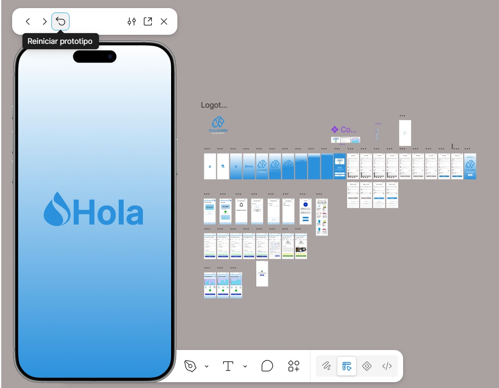
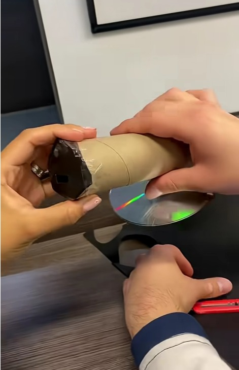

Me llamo Kenia Zayetzi Vargas Grijalva, tengo 18 años, disfruto mucho de las actividades artísticas, también tengo un gusto por la cocinar sobretodo con los postres. Estudié en el SABES donde en si no me dediqué a un área en específico ya que llevé un taller de diseño gráfico y más adelante pude escoger estar en exactas.
Trabajaba en una cafetería llamada "Rosa Pastel" donde tomé un taller de hacer arte latte, sin embargo solo duré pocos meses ya que el trabajo en la uni estaba siendo muy pesado.
En tercer cuatrimestre tuvimos que escoger un tema y desarrollar un protótipo que resuelva una problemática actual. Y así realizamos interfaces, códigos, bases de datos, diagramas, etc. Si se nos complicó un tiempo porque habiamos tenido algunos problemas en ponernos de acuerdo, pero pudimos resolver y sacamos el proyecto adelante.

En cuarto semestre de prepa hicimos un preyecto llamado "Especto Ultravioleta" donde consistia en realizar un informe del proceso, los materiales, y conclusiones. También teniamos que realizar un modelo que lo comprobara eran muy sencillos los materiales, asi que no hubo problema.

4778477454
zayetzivargas@gmail.com
25000581@alumnos.utleon.edu.mx